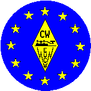

|
THE EUROPEAN CW ASSOCIATIONEUCW/FISTS QRS PARTY |
 |
In spite of a low number of logs being received this inaugural running of the EUCW/FISTS QRS Party seemed to be enjoyed by most of the participating stations. It was clear from the logs that a lot more people took part in the event than sent in logs.
The really good thing to come out from the logs was that several entries were received from people who had not entered any form of event before, including the winner of the "Most Readable Morse" certificate. The key/keyers used were many and varied from a Schurr squeeze paddle to a Swedish brass pump key and a G4ZPY key (presented as "Fist of the Year" in 1996). This last key was used by G8NT who I believe was the oldest contestant, at 91 years 8 months old, who finished runner up in Class A. The power used in Class A varied from 100W to 5W so nobody needed to run a lot of power. Logs were received from 5 different EUCW clubs, but it was notable from comments made in the logs that a lot of people were hoping to hear from more of the mainland European clubs. One or two rule changes have been suggested and these will be considered in time for next year's contest.
Congratulations to all the certificate winners and especially to G4KXG for being voted "Most Readable Morse Heard" during the party. Many thanks to all whom sent in logs and hopefully we will have more participation in next year's event, which starts on 28th April 2002.
RESULTS Call Club Points Mults Total CLASS A DL1BUG RTC 314 52 16328 * G8NT FISTS 268 38 10868 * IK2RMZ AGCW 121 50 6050 * G4KXG FISTS 155 33 5115 * G4FAI FISTS 96 23 2208 G0GSY FISTS 93 26 2208 F5LPY UFT 135 15 2025 HB9CHE FISTS 81 16 1296 M0BYN FISTS 53 18 954 G4LHI FISTS 43 18 774 G4NCU FISTS 31 9 279 M0CMQ FISTS 20 4 80 G0TBD FISTS 7 4 28 G3VQO FISTS 3 3 9 PA3CLQ AGCW 3 1 3 CLASS B HB9OU HTC 31 11 341 * HB9DEO HTC 23 6 138 * CLASS C DJ9AO 33 8 264 * OE8GHR 24 8 192 * * CERTIFICATE WINNERS
Many thanks for check logs from GW0SGG and PA3AAF.
73
Keith Farthing M0CLO, FISTS Contest Manager.